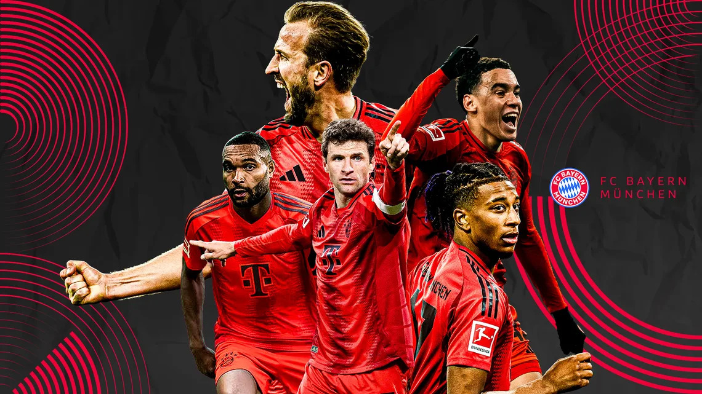

One of my interests is watching my favorite German team play which is FC Bayern Munich.
FC Bayern Munich is a German professional football club based in Munich, founded in 1900, that has become one of Europe's most successful clubs, known for its 33 national league titles and multiple European trophies, including six Champions League titles and two consecutive European Cups.
The club has a rich history of success both domestically and internationally. Bayern Munich has won the Bundesliga title a record 33 times, showcasing their dominance in German football. They have also secured the DFB-Pokal (German Cup) 20 times, further solidifying their status as a powerhouse in German football.
On the European stage, Bayern Munich has been equally impressive. The club has won the prestigious UEFA Champions League six times, with their most recent triumph in 2020. They also achieved back-to-back European Cup victories in 1974 and 1975, establishing themselves as a force to be reckoned with in European football.
Bayern Munich has been home to some of the greatest players in football history. Three of the most legendary German footballers of all time who played for Bayern are Sepp Maier, Gerd Müller, and Franz Beckenbauer.
Home ground: The club plays its home games at the Allianz Arena, which it has called home since 2005.
My favorite player is Thomas Müller, who used to play with the team until the end of the 2024/25 season.
Watch this short Bayern Munich highlight video: